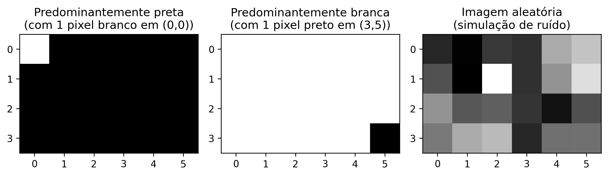

Este capítulo inaugura a Parte 1 do livro, dedicada aos fundamentos do Processamento Digital de Imagens (PDI). São apresentados a representação matemática de imagens digitais e os principais métodos para sua manipulação, utilizando a linguagem Python e a biblioteca morph.py (ZAMPIROLLI, 2025).
1.1 Objetivos
Ao final deste capítulo, você será capaz de:
Compreender a natureza física e matemática da imagem digital \(f(x,y)\).
Identificar as faixas do espectro eletromagnético relevantes para PDI.
Configurar o ambiente de desenvolvimento em Python.
Realizar operações básicas: leitura, exibição e salvamento de imagens.
Manipular estruturas de matrizes (NumPy) sem cair em armadilhas de memória.
Acessar e modificar intensidades de pixels individualmente.
Aplicar limiarização manual.
1.2 Antes de começar: Notebooks em Python
Este material foi construído sob o conceito de Literate Programming (Programação Literária), idealizado por Donald Knuth na década de 1980 (KNUTH, 1984). Knuth — também criador do sistema TeX para tipografia digital — propôs que os programas fossem escritos como uma narrativa lógica para seres humanos, intercalando código e documentação.
Para executar uma célula, pressione Shift + Enter ou clique no botão ▶️.
NotaNota sobre o formato
Nas versões renderizadas (PDF ou HTML), o código é apresentado em blocos estáticos para fins de leitura e referência. A execução interativa requer o acesso via Google Colab (disponível no topo da página) ou em ambiente local via VSCode ou Jupyter Notebook.
1.3 Fundamentos
O estudo de sistemas baseados em imagens compreende um ecossistema de disciplinas integradas que transformam dados visuais brutos em conhecimento estruturado. Enquanto algumas áreas focam na geração de representações, outras dedicam-se ao tratamento e à análise desses dados para dar suporte a aplicações tecnológicas complexas.
O diagrama apresentado no Figura 1.1 estabelece a distinção e complementaridade entre o Processamento Digital de Imagens (PDI) e a Visão Computacional (VC). O PDI, destacado em verde, tem como foco a transformação de imagem para imagem, visando melhoria de qualidade ou pré-processamento, como a remoção de ruídos e realce de contraste.
Em contrapartida, a VC, assinalada em azul, foca na interpretação do conteúdo visual para extrair modelos ou informações, como o reconhecimento de objetos e gestos. A região de intersecção ilustra a sinergia entre as áreas, onde o PDI prepara os dados visuais para a interpretação pela VC. O mapa também demonstra as interconexões de ambas as disciplinas com áreas como Robótica, Computação Gráfica, Inteligência Artificial (IA) e Neurociência.
Figura 1.1: Diagrama relacional detalhando as distinções fundamentais, sinergias e interconexões entre PDI e VC no contexto de sistemas baseados em imagens.
1.3.1 👁️ Visão Computacional
Foco:Imagem → Modelo (caminho inverso da Computação Gráfica).
Objetivo: Extrair informação de alto nível a partir de imagens ou vídeos.
Aplicações típicas:
Robótica - detecção de obstáculos, localização e navegação autônoma.
Vigilância e inspeção - reconhecimento de eventos, leitura de placas, controle de qualidade.
Sensoriamento remoto - análise de imagens de satélite, mapeamento ambiental.
Imagens médicas - detecção de tumores, segmentação de órgãos, auxílio ao diagnóstico.
Interação humano‑computador - reconhecimento de gestos, expressões faciais, rastreamento ocular.
Relação com outras áreas: utiliza técnicas de Aprendizado de Máquina e IA para classificar e interpretar cenas; serve como “olhos” da Robótica.
1.3.2 🖼️ Processamento Digital de Imagens (PDI)
Foco:Imagem → Imagem (geralmente - transformação de uma imagem em outra).
Objetivo: Melhorar a qualidade visual ou extrair características de baixo nível.
Aplicações comuns:
Eliminação de ruídos (filtros de média, mediana, gaussiano).
Melhoria de contraste (equalização de histograma, ajuste gamma).
Detecção de bordas (Sobel, Canny, Laplaciano).
Segmentação (limiarização, crescimento de regiões, watershed).
Transformações geométricas (redimensionamento, rotação, correção de perspectiva).
É a base para a maioria dos sistemas de VC (pré‑processamento).
A Computação Gráfica frequentemente aplica PDI para pós‑processamento (ex.: suavização, realce).
Técnicas de IA podem otimizar parâmetros de processamento (ex.: aprendizado de filtros).
Tabela 1.1: Conexão entre PDI, VC e outras áreas da ciência.
Área
Relação com PDI e VC
Inteligência Artificial
Fornece modelos (redes neurais, SVM) que interpretam saídas da VC.
Robótica
Consome dados de VC para tomar decisões (navegação, manipulação).
Aprendizado de Máquina
Usa descritores extraídos pelo PDI/VC para treinar classificadores.
Computação Gráfica
Caminho inverso: modelo → imagem; muitas vezes aplica PDI para renderização realista.
Neurociência
Inspira modelos de PDI (ex.: filtros semelhantes a células ganglionares da retina).
1.4 Etapas do PDI
As etapas do PDI são apresentadas na Figura 1.2, que podem ser compreendidas como uma cadeia de transformações que reduz a redundância dos dados em busca de significado:
Baixo Nível: Atua diretamente sobre os pixels da imagem ruidosa para realizar melhorias e filtragens, gerando como saída uma imagem limpa ou realçada.
Médio Nível: Recebe a imagem tratada e realiza a segmentação e descrição, transformando a matriz de pixels em atributos estruturados (forma, tamanho e textura).
Alto Nível: Utiliza a tabela de atributos para alimentar processos de lógica e inteligência artificial, resultando na decisão ou reconhecimento final (como o diagnóstico médico).
Figura 1.2: Representação do fluxo sequencial de processamento: a saída de cada nível torna-se a entrada do nível subsequente.
A Figura 1.3 detalha a sequência completa do PDI, desde a captura até a interpretação. O fluxo inicia-se na Aquisição da Imagem (1) e prossegue com o Melhoramento (2) e a Restauração (3). Em seguida, o conteúdo é isolado pela Segmentação (4) e refinado pela Morfologia (5). A transição crucial ocorre na Representação e Descrição (6), onde objetos visuais são convertidos em dados matemáticos (área, perímetro etc.), permitindo o Reconhecimento (7). Processos auxiliares incluem o Processamento de Imagem Colorida e a Compressão, que contribuem para a eficiência do armazenamento e da análise.
Figura 1.3: Fluxo detalhado do PDI: da aquisição sensorial à extração de atributos e reconhecimento automatizado, incluindo em processamento colorido e compressão.
1.5 Formação da Imagem e o Espectro
O processo de formação de uma imagem é fundamentado na interação entre a matéria e a energia radiante. Essencialmente, uma imagem é concebida quando um sensor registra a radiação resultante da interação com um objeto físico. No contexto da visão humana e da fotografia convencional, este fenômeno depende de uma fonte de luz que ilumine a cena; as características dos objetos são então codificadas através das variações de intensidade e cor da luz que atinge o sensor, conforme ilustrado na Figura 1.4.
Figura 1.4: Representação do espectro visível e sua posição em relação às demais radiações eletromagnéticas, destacando a variação dos comprimentos de onda de 380 nm a 750 nm.
A luz visível ocupa apenas uma pequena faixa do espectro eletromagnético — entre 380 nm (violeta) e 750 nm (vermelho) — conforme ilustrado na Figura 1.5. Sensores digitais convencionais operam nessa mesma janela, mas equipamentos especializados podem captar radiações invisíveis ao olho humano, como o infravermelho e os raios X. Em PDI, a imagem formada depende diretamente da sensibilidade espectral do sensor utilizado.
Figura 1.5: (A) Espectro eletromagnético completo em escala logarítmica, com destaque para a faixa visível. (B) Detalhe da luz visível (380-750 nm) e suas cores. (C) Decomposição da luz branca pelo prisma: menor comprimento de onda sofre maior refração, separando UV, visível e infravermelho.
A partir desse processo físico de aquisição, torna-se possível modelar matematicamente a imagem digital como uma função bidimensional discreta, na qual cada ponto da cena é representado por amostras numéricas de intensidade luminosa, formalizando assim os conceitos de pixel e de imagem digital apresentados na próxima seção.
1.6 O que é uma Imagem Digital?
Uma imagem digital é formada por uma grade de pixels (Picture Elements), onde cada pixel é a menor unidade elementar da imagem.
DicaO que é um Pixel?
Um pixel é a menor unidade endereçável que compõe uma imagem digital. Cada pixel ocupa uma posição única na grade e armazena um ou mais valores numéricos que representam sua intensidade ou cor.
Representação Matemática
Diferente de uma função contínua, o domínio de uma imagem digital é um plano retangular finito \(\mathbb{E} \subset \mathbb{Z}^2\), que representa a grade de amostragem. Este domínio é indexado por coordenadas inteiras:
\[
\mathbb{E} = \{ (x, y) \in \mathbb{Z}^2 \mid 0 \le x < L,\; 0 \le y < H \}
\tag{1.1}\]
Onde:
\(L\): representa a largura da imagem (número de colunas).
\(H\): representa a altura da imagem (número de linhas).
A imagem digital é uma função que associa cada par de coordenadas \((x,y)\) a um ou mais valores que descrevem a aparência do pixel.
\[
f: \mathbb{E} \to \mathcal{V}
\tag{1.2}\]
O conjunto \(\mathcal{V}\) define os valores possíveis para o pixel (codomínio), variando conforme o tipo de imagem, como demonstrado na Tabela 1.2.
Tabela 1.2: Principais tipos de imagem digital e seus respectivos conjuntos de valores possíveis para cada pixel.
Tipo de imagem
\(\mathcal{V}\) (valores do pixel)
Representação
Binária
\(\{0, 1\}\) ou \(\{0, 255\}\)
⬛◻️
Tons de cinza
\(\{0, 1, \dots, 255\}\)
░▒▓█
Colorida (RGB)
\(\{0, \dots, 255\}^3\) (triplas ordenadas de valores)
🟥🟩🟦
Exemplo prático: Uma imagem colorida no modelo RGB pode ser representada matematicamente por uma função que associa três valores de intensidade a cada pixel. Computacionalmente, essa representação corresponde a três matrizes sobrepostas — os canais vermelho (Red), verde (Green) e azul (Blue) — nas quais cada elemento armazena a intensidade luminosa do respectivo canal em uma determinada posição da imagem.
Para viabilizar os experimentos práticos de PDI e VC, este livro utiliza o ecossistema científico do Python, integrando bibliotecas voltadas à manipulação matricial, ao processamento de imagens e à visualização de resultados, apresentadas a seguir.
1.7 Configuração do Ambiente
Este material utiliza C++17 e a biblioteca de cabeçalho único morph.hpp, originalmente proposta para Python em Zampirolli (2025). Aqui, é utilizada uma versão mínima e didática da morph.py, adaptada para compilação simples com g++, conforme apresentado na Tabela 1.3.
Cada célula de código é compilada e executada como um processo isolado (%%writefile arquivo.cpp seguido de g++). Diferentemente do kernel Python, não há estado persistente entre as células: as imagens produzidas por uma célula são salvas em arquivos para serem lidas pela próxima.
Os Exercícios de Programação (EPs) apresentados ao final dos capítulos podem ser validados pelo mesmo módulo testsuite.py utilizado na trilha Python, que compila a solução com g++ e compara sua saída com os casos de teste. Assim, os mesmos casos de teste (.cases) podem validar soluções em C++, Python e outras linguagens, tanto nos notebooks quanto no Moodle/VPL.
Tabela 1.3: Principais bibliotecas e ferramentas utilizadas na trilha C++ deste livro.
Biblioteca / Ferramenta
Função principal
g++ (C++17)
Compilação de cada célula de código
morph.hpp
Abstração didática de operações de PDI
stb_image.h / stb_image_write.h
Leitura/escrita de PNG/JPEG (sem OpenCV)
testsuite.py
Execução e validação automática dos EPs
1.8 Sobre o morph.hpp
A morph.hpp é uma versão C++ mínima e didática da morph.py: implementa apenas as funções usadas neste livro (read, gray, randomImage, show, write, threshold, drawImg) e não tem paridade numérica garantida com a implementação Python — o critério é “compila e produz uma imagem plausível”, não “resultado bit-a-bit idêntico ao Python”.
As bibliotecas stb_image.h/stb_image_write.h (domínio público/MIT) são vendorizadas junto ao repositório para evitar dependências de sistema (apt install) durante a compilação no Colab.
import os, urllib.requestos.makedirs("tmp/state", exist_ok=True) # artefatos de build da trilha C++ (.cpp, binário, PNGs)url ="https://raw.githubusercontent.com/fzampirolli/pdi-vc/master/morph/config.py"ifnot os.path.exists("config.py"): urllib.request.urlretrieve(url, "config.py")import configconfig.setup(testsuite=True, cpp=True)from morph import mmfrom testsuite import TestSuite
1.9 Fundamentos de Matrizes — atenção à cópia de referências
Como uma imagem digital pode ser representada por uma matriz, é importante compreender como criar e manipular matrizes corretamente. Em C++, std::vector tem semântica de valor: copiar o vetor copia os seus dados. Por isso std::vector<std::vector<int>> m(3, std::vector<int>(2, 0)) cria de fato três linhas independentes — o construtor de preenchimento copia a linha-modelo três vezes.
AvisoAtenção à cópia de referências
A armadilha aparece quando se usa ponteiros ou referências em vez de cópias. Em std::vector<int> linha(2, 0); std::vector<std::vector<int>*> m(3, &linha);, os três elementos de m apontam para a mesma linha, e alterar (*m[0])[0] altera todas. O mesmo ocorre com auto& linha = m[0]; (referência — modifica a matriz), em contraste com auto linha = m[0]; (cópia — deixa a matriz intacta).
Para visualizar esse comportamento, pode-se executar o código no Python Tutor (que também executa C++ passo a passo) e comparar o efeito de cópias e de referências.
Na prática, para o processamento digital de imagens (PDI), utiliza-se a estrutura mm::Image da morph.hpp, que também tem semântica de valor: mm::Image b = a; copia os pixels, enquanto mm::Image& b = a; cria apenas um apelido para a mesma imagem. O código a seguir apresenta diferentes formas de criação de imagens sintéticas, cujos resultados são exibidos na Figura 1.6.
%%writefile tmp/fig_imagens_sinteticas.cpp#define MM_OUT "tmp/fig_imagens_sinteticas.png"#include "morph.hpp"#include <algorithm>#include <string>#include <vector>#include <filesystem>int main() {// Criando uma imagem preta (zeros) de 4, 6 pixels mm::Image img_preta(4, 6); img_preta.at(0, 0) =255;// pixel branco no canto superior esquerdo// Criando uma imagem branca (255) de 4, 6 pixels mm::Image img_branca(4, 6); std::fill(img_branca.data.begin(), img_branca.data.end(), 255); img_branca.at(3, 5) =0;// pixel preto no canto inferior direito// Criando uma imagem aleatória para testes (ruído) mm::Image img_random = mm::randomImage(4, 6, 255); std::cout <<"Matriz aleatória gerada:"<< std::endl; std::cout << mm::drawImg(img_random) << std::endl; std::vector<mm::Image> images = {img_preta, img_branca, img_random}; std::vector<std::string> titles = {"Predominantemente preta\n(com 1 pixel branco em (0,0))","Predominantemente branca\n(com 1 pixel preto em (3,5))","Imagem aleatória\n(simulação de ruído)" }; mm::show(images, MM_OUT, titles, 3);// [pdi:panel-io] auto-generated — do not edit by handstd::filesystem::create_directories("tmp");mm::write(img_preta, "tmp/fig_imagens_sinteticas_0.png");mm::write(img_branca, "tmp/fig_imagens_sinteticas_1.png");mm::write(img_random, "tmp/fig_imagens_sinteticas_2.png");// [pdi:panel-io:end]return0;}
Writing tmp/fig_imagens_sinteticas.cpp
!g++-I. tmp/fig_imagens_sinteticas.cpp -o tmp/fig_imagens_sinteticas \&& ./tmp/fig_imagens_sinteticas \&& test -f "tmp/fig_imagens_sinteticas.png"\|| echo "⚠ mm::show não gravou tmp/fig_imagens_sinteticas.png"
mm.show( [ mm.read("tmp/fig_imagens_sinteticas_0.png"), mm.read("tmp/fig_imagens_sinteticas_1.png"), mm.read("tmp/fig_imagens_sinteticas_2.png"), ], titles=['Predominantemente preta\n(com 1 pixel branco em (0,0))','Predominantemente branca\n(com 1 pixel preto em (3,5))','Imagem aleatória\n(simulação de ruído)', ], cols=3, axis=True, figsize=(9, 3),)

Figura 1.6: Exemplos de imagens sintéticas representadas matricialmente.
1.10 Lendo e Exibindo Imagens
Em bibliotecas como o NumPy, OpenCV e scikit-image, imagens digitais são frequentemente representadas computacionalmente como arrays do NumPy. Dessa forma, operações matriciais e conceitos de álgebra linear podem ser aplicados diretamente ao PDI.
Uma das operações fundamentais em PDI é a leitura de imagens. Na biblioteca morph.py, a função mm.read() permite carregar imagens tanto de arquivos locais quanto de URLs, como ilustrado na Figura 1.7.
%%writefile tmp/fig_01_natureza.cpp#define MM_OUT "tmp/fig_01_natureza.png"// Compile: g++-std=c++17-o programa programa.cpp -I. -lcurl#include "morph.hpp"#include <iostream>#include <string>#include <filesystem>//| label: fig-01-natureza//| fig-cap: "Mandrill (Mandrillus sphinx) em ambiente natural. Crédito: Julien Renoult (CC BY 4.0)."//| echo: trueint main() { std::string url ="https://upload.wikimedia.org/wikipedia/commons/8/87/Mandrillus_sphinx_339428057.jpg"; std::string caminho ="imagens/mandrill.png"; mm::Image img_obj;if (!std::filesystem::exists(caminho)) { std::filesystem::create_directories("imagens"); img_obj = mm::read(url); mm::write(img_obj, caminho); } else { img_obj = mm::read(caminho); }// A imagem já está no formato mm::Image mm::Image img = img_obj; std::cout <<"Dimensões (H, W, Canais): ("<< img.h <<", "<< img.w <<", "<< img.channels <<")"<< std::endl; std::cout <<"Tipo de dado: uint8_t"<< std::endl; mm::show(img, MM_OUT, "Exemplo: Captura RGB");// [pdi:state-io] auto-generated — do not edit by handstd::filesystem::create_directories("tmp/state");mm::write(img, "tmp/state/img_24.png");// [pdi:state-io:end]return0;}
Writing tmp/fig_01_natureza.cpp
!g++-I. tmp/fig_01_natureza.cpp -o tmp/fig_01_natureza \&& ./tmp/fig_01_natureza \&& test -f "tmp/fig_01_natureza.png"\|| echo "⚠ mm::show não gravou tmp/fig_01_natureza.png"
Dimensões (H, W, Canais): (1365, 2048, 3)
Tipo de dado: uint8_t
Exemplo: Captura RGB
mm.show(mm.read("tmp/fig_01_natureza.png"))
Figura 1.7: Mandrill (Mandrillus sphinx) em ambiente natural. Crédito: Julien Renoult (CC BY 4.0).
Alternativa: Download da Imagem para Armazenamento Local
Em ambientes nos quais a leitura direta de URLs esteja indisponível — devido a restrições de rede, políticas de firewall ou ausência de conectividade — uma alternativa consiste em baixar previamente a imagem para o sistema de arquivos local e então carregá-la com mm::read(). Na trilha C++, mm::read também aceita URLs diretamente (download interno via curl/wget); esta alternativa cobre o caso de baixar uma vez e reutilizar o arquivo local. No exemplo a seguir, o arquivo é salvo como mandrill.png.
wget -O mandrill.png <URL> realiza o download da imagem e a armazena localmente com o nome especificado;
mm::read("mandrill.png") efetua a leitura do arquivo diretamente do sistema de arquivos, sem necessidade de requisições HTTP adicionais;
essa estratégia reduz a dependência de conectividade durante a execução dos experimentos e evita downloads repetidos da mesma imagem.
DicaNota
O prefixo ! é utilizado em ambientes baseados em notebooks, como Jupyter Notebook, JupyterLab e Google Colab, para executar comandos do sistema operacional diretamente em células de código. Em terminais convencionais, o comando deve ser utilizado sem o prefixo !.
Caso o utilitário wget não esteja instalado, pode-se utilizar alternativamente:
Conforme vimos, uma imagem colorida no espaço RGB é representada pela função:
\[
f: \mathbb{E} \to \{0,1,\dots,255\}^3
\]
Ou seja, para cada pixel \((x,y)\), temos três valores \((R,G,B)\) que definem sua cor.
Conversão para Tons de Cinza
Para converter uma imagem RGB em tons de cinza (grayscale), é necessário combinar os três canais em um único valor de intensidade \(g\), que representa o brilho percebido. Como o olho humano não é igualmente sensível ao vermelho, verde e azul, utiliza-se uma média ponderada. O padrão ITU-R BT.601 ({ITU-R}, 2011) define os seguintes pesos:
\[
g = 0.299\,R + 0.587\,G + 0.114\,B
\tag{1.3}\]
Após o cálculo, o valor \(g\) é arredondado para o inteiro mais próximo e ajustado ao intervalo \([0, 255]\). O resultado é uma nova imagem, agora em tons de cinza, representada por:
A partir da imagem em tons de cinza \(f_{\text{cinza}}(x,y)\), uma operação fundamental é a limiarização, que produz uma imagem binária (apenas preto e branco). Para isso, escolhe-se um valor de corte \(T\) (geralmente no intervalo \([0,255]\)) e define-se:
Exemplo: Com \(T = 128\), pixels com intensidade acima de 128 tornam-se brancos (255); os demais tornam-se pretos (0).
A limiarização é amplamente usada para segmentar objetos do fundo, extrair bordas ou criar máscaras binárias para processamento posterior.
Nota: O valor 255 representa o branco máximo em imagens de 8 bits, enquanto 0 representa o preto absoluto.
Exemplo prático de conversão e limiarização
A Figura 1.8 ilustra os principais passos para transformar uma imagem colorida em tons de cinza e, em seguida, convertê-la em uma imagem binária por limiarização. O código a seguir implementa essas etapas:
%%writefile tmp/fig_01_processamento_basico.cpp#define MM_OUT "tmp/fig_01_processamento_basico.png"#include "morph.hpp"#include <string>#include <vector>#include <filesystem>int main() {// [pdi:state-io] auto-generated — do not edit by handmm::Image img = mm::read("tmp/state/img_24.png");// [pdi:state-io:end]// img já está inicializado (fornecido automaticamente)//1. Converter para Tons de Cinza mm::Image img_gray = mm::gray(img);//2. Aplicar limiar (Pixels >128 tornam-se 255, outros 0)int limiar =128; mm::Image img_binaria = mm::threshold(img_gray, limiar);// Uso da nova função mm::show( {img, img_gray, img_binaria}, MM_OUT, {"Original", "Tons de Cinza", "Binária (T="+ std::to_string(limiar) +")"},3 );// [pdi:state-io] auto-generated — do not edit by handstd::filesystem::create_directories("tmp/state");mm::write(img_gray, "tmp/state/img_gray_28.png");// [pdi:state-io:end]// [pdi:panel-io] auto-generated — do not edit by handstd::filesystem::create_directories("tmp");mm::write(img, "tmp/fig_01_processamento_basico_0.png");mm::write(img_gray, "tmp/fig_01_processamento_basico_1.png");mm::write(img_binaria, "tmp/fig_01_processamento_basico_2.png");// [pdi:panel-io:end]return0;}
Writing tmp/fig_01_processamento_basico.cpp
!g++-I. tmp/fig_01_processamento_basico.cpp -o tmp/fig_01_processamento_basico \&& ./tmp/fig_01_processamento_basico \&& test -f "tmp/fig_01_processamento_basico.png"\|| echo "⚠ mm::show não gravou tmp/fig_01_processamento_basico.png"
[1] Original
[2] Tons de Cinza
[3] Binária (T=128)
Figura 1.8: Processamento básico de imagens: (a) imagem original, (b) imagem em tons de cinza, (c) imagem binarizada por limiar (T=128).
1.12 Limiarização pelo método de Otsu
Conforme apresentado na Equação 1.4, a limiarização converte uma imagem em tons de cinza para binária usando um valor de corte \(T\). Até agora fixamos \(T = 128\) manualmente.
Entretanto, a escolha manual de \(T\) nem sempre é trivial. A biblioteca mm oferece uma alternativa automática: quando o limiar não é fornecido, a função mm::threshold(img_gray) calcula o valor de \(T\) pelo método de Otsu (OTSU, 1979). Esse método, que será detalhado em capítulos futuros, maximiza a variância entre classes do histograma (frequência de cada tom de cinza), separando automaticamente os pixels de objeto e fundo.
O código abaixo compara a limiarização manual (\(T=128\)) com a automática (Otsu). A binarização por Otsu é feita com mm::threshold(img_gray); como a API mínima da morph.hpp não devolve o \(T\) calculado, o valor exibido no rótulo da figura é recuperado com cv2.threshold na etapa de exibição (mesmo algoritmo, mesmo \(T\)).
%%writefile tmp/fig_01_otsu.cpp#define MM_OUT "tmp/fig_01_otsu.png"#include <iostream>#include "morph.hpp"#include <filesystem>int main() {// [pdi:state-io] auto-generated — do not edit by handmm::Image img_gray = mm::read("tmp/state/img_gray_28.png");// [pdi:state-io:end]// img_gray já é fornecida (mm::Image)// Limiarização com T fixo (manual)int T_fixo =128; mm::Image img_bin_fixo = mm::threshold(img_gray, T_fixo);// Limiarização pelo método de Otsu (T automático)int T_otsu = mm::otsu(img_gray);// calcula T via Otsu mm::Image img_bin_otsu = mm::threshold(img_gray);// usa o mesmo T de Otsu std::cout <<"Limiar calculado por Otsu: T = "<< T_otsu <<"\n";// ou simplesmente:// img_bin_otsu = mm::threshold(img_gray);// Exibição lado a lado mm::show( {img_gray, img_bin_fixo, img_bin_otsu}, MM_OUT, {"Tons de Cinza", "Binária (T=128)", "Binária (Otsu, T="+ std::to_string(T_otsu) +")"},3 );// [pdi:panel-io] auto-generated — do not edit by handstd::filesystem::create_directories("tmp");mm::write(img_gray, "tmp/fig_01_otsu_0.png");mm::write(img_bin_fixo, "tmp/fig_01_otsu_1.png");mm::write(img_bin_otsu, "tmp/fig_01_otsu_2.png");// [pdi:panel-io:end]return0;}
Writing tmp/fig_01_otsu.cpp
!g++-I. tmp/fig_01_otsu.cpp -o tmp/fig_01_otsu \&& ./tmp/fig_01_otsu \&& test -f "tmp/fig_01_otsu.png"\|| echo "⚠ mm::show não gravou tmp/fig_01_otsu.png"
Limiar calculado por Otsu: T = 94
[1] Tons de Cinza
[2] Binária (T=128)
[3] Binária (Otsu, T=94)
Figura 1.9: Comparação entre limiarização manual (T=128) e automática (Otsu) sobre a imagem em tons de cinza.
A Figura 1.9 mostra que o limiar obtido por Otsu se adapta automaticamente à imagem, resultando em uma binarização mais eficiente do que um valor fixo, especialmente quando as intensidades do objeto e do fundo são bem separadas no histograma. Essa técnica é amplamente utilizada em sistemas de VC para binarização de documentos, detecção de objetos e pré‑processamento de imagens.
a morph.hpp abstrai toda essa complexidade: basta chamar mm::threshold(img_gray). O limiar de Otsu é calculado automaticamente e a imagem binária é devolvida diretamente. Essa abordagem permite concentrar-se no conceito, não nos detalhes de implementação.
1.13 Acesso a Pixels
Na morph.hpp, a imagem é um mm::Image com um buffer linear data (linha após linha, canais intercalados) e o método at(y, x, c) para acesso individual, seguindo a convenção matricial linha (eixo Y) e coluna (eixo X): img.at(linha, coluna) para tons de cinza e img.at(linha, coluna, canal) para cada canal de uma imagem RGB.
O código da Figura 1.10 demonstra como extrair esses valores em imagens coloridas (RGB) e em tons de cinza, além de isolar a vizinhança imediata do ponto de interesse.
%%writefile tmp/fig_01_pixel_acesso.cpp#define MM_OUT "tmp/fig_01_pixel_acesso.png"#include "morph.hpp"#include <iostream>#include <string>int main() {// [pdi:state-io] auto-generated — do not edit by handmm::Image img = mm::read("tmp/state/img_24.png");mm::Image img_gray = mm::read("tmp/state/img_gray_28.png");// [pdi:state-io:end]// img e img_gray já estão inicializados aqui//1. Coordenadas do pixel alvo (linha, coluna)int r =600, c =800;//2. Acesso direto aos valores do pixel unsigned char pixel_cinza = img_gray.at(r, c); std::cout <<"Pixel alvo ("<< r <<", "<< c <<"):\n"; std::cout <<" Tons de cinza (escalar) : "<< (int)pixel_cinza <<"\n"; std::cout <<" Colorido (canais RGB) : R="<< (int)img.at(r, c, 0) <<", G="<< (int)img.at(r, c, 1) <<", B="<< (int)img.at(r, c, 2) <<"\n";//3. Vizinhanca 3x3 ao redor de (r, c); o pixel central vai entre colchetes std::cout <<"Matriz de vizinhanca 3x3 (tons de cinza):\n";for (int dy =-1; dy <=1; dy++) { std::string linha ="";for (int dx =-1; dx <=1; dx++) {int v = (int)img_gray.at(r + dy, c + dx);if (dy ==0&& dx ==0) { linha +="["+ std::to_string(v) +"]"; } else { linha +=" "+ std::to_string(v) +" "; } } std::cout <<" "<< linha <<"\n"; }//4. Marca a posicao do pixel com um quadrado vermelho vazado (borda de//3 px) numa copia da imagem e exibe (equivalente ao ponto do matplotlib). mm::Image marcada = img;// cópia (semântica de valor)int lado =20;// meio-lado do quadrado, em pixelsint esp =5;// espessura da bordafor (int x = c - lado; x <= c + lado; x++) {for (int w =0; w < esp; w++) { marcada.at(r - lado + w, x, 0) =255; marcada.at(r - lado + w, x, 1) =0; marcada.at(r - lado + w, x, 2) =0; marcada.at(r + lado - w, x, 0) =255; marcada.at(r + lado - w, x, 1) =0; marcada.at(r + lado - w, x, 2) =0; } }for (int y = r - lado; y <= r + lado; y++) {for (int w =0; w < esp; w++) { marcada.at(y, c - lado + w, 0) =255; marcada.at(y, c - lado + w, 1) =0; marcada.at(y, c - lado + w, 2) =0; marcada.at(y, c + lado - w, 0) =255; marcada.at(y, c + lado - w, 1) =0; marcada.at(y, c + lado - w, 2) =0; } }// Mostra a imagem marcada mm::show(marcada, MM_OUT, "Localizacao do pixel ("+ std::to_string(r) +", "+ std::to_string(c) +")");return0;}
Writing tmp/fig_01_pixel_acesso.cpp
!g++-I. tmp/fig_01_pixel_acesso.cpp -o tmp/fig_01_pixel_acesso \&& ./tmp/fig_01_pixel_acesso \&& test -f "tmp/fig_01_pixel_acesso.png"\|| echo "⚠ mm::show não gravou tmp/fig_01_pixel_acesso.png"
Pixel alvo (600, 800):
Tons de cinza (escalar) : 80
Colorido (canais RGB) : R=92, G=78, B=67
Matriz de vizinhanca 3x3 (tons de cinza):
82 96 105
84 [80] 95
82 76 83
Localizacao do pixel (600, 800)
mm.show(mm.read("tmp/fig_01_pixel_acesso.png"))
Figura 1.10: Acesso a um pixel específico (r, c) e a representação de sua vizinhança na imagem.
Acesso a pixel em C++ (mm::Image):
Tons de cinza:img_gray.at(r, c) devolve um unsigned char (0 a 255) com a intensidade do cinza no pixel.
RGB:img.at(r, c, 0), img.at(r, c, 1), img.at(r, c, 2) acessam os canais R, G e B — um índice de canal por vez; não há vetor [R, G, B].
Vizinhança \(3\times 3\): percorrida por dois laços aninhados sobre img_gray.at(r + dy, c + dx), com dy, dx em \(\{-1, 0, 1\}\) — não há fatiamento (slicing) como em NumPy. Essa varredura é a base para filtros espaciais e convoluções.
Não há plotagem interativa (equivalente a plt.plot): para marcar a posição do pixel, a célula de código a seguir desenha um quadrado vermelho vazado ao redor dele numa cópia da imagem (marcada = img.copy(), depois marcada.at(...)) e exibe com mm::show.
A indexação é zero-based: (0,0) é o canto superior esquerdo. A primeira dimensão controla a altura (linhas/Y) e a segunda a largura (colunas/X).
1.14 Resumo
Neste capítulo, apresentaram-se os fundamentos de representação de imagens digitais: a definição de pixel, a estruturação de imagens em matrizes e o impacto da amostragem e da quantização na qualidade final:
Imagem digital = função \(f(x,y)\) que mapeia coordenadas para intensidades (escalares ou vetoriais).
Domínio: conjunto finito \(\mathbb{E} = \{(x,y) \in \mathbb{Z}^2 \mid 0 \le x < L,\; 0 \le y < H\}\).
Tipos principais: binária (\(\mathcal{V} = \{0, 255\}\)), tons de cinza (\(\mathcal{V} = [0,255]\)) e RGB (\(\mathcal{V} = [0,255]^3\)).
A biblioteca morph.py (ou mm) oferece funções didáticas para operações básicas de PDI, como mm.gray(), mm.threshold(), mm.show_multiple().
Armadilha NumPy: nunca use [[0]*n]*m para criar matrizes — use sempre np.zeros() ou np.ones().
Limiarização converte tons de cinza em binária; o método de Otsu determina o valor de corte automaticamente maximizando a variância entre classes.
Acesso a pixels via img[linha, coluna], com indexação zero-based.
O Capítulo 2 abordará histogramas e equalização de contraste.
1.15 🤖 Uso do Gemini Notebook como Tutor Complementar
Nesta edição, além dos notebooks interativos no Google Colab, o Gemini Notebook está disponível como ferramenta complementar de estudo. A plataforma utiliza exclusivamente os documentos fornecidos pelo autor como base de conhecimento, garantindo respostas coerentes com o conteúdo do livro.
Importante🎓 Estude com o Tutor Inteligente
Acesse o ambiente do capítulo pelo link abaixo e explore especialmente as opções Guia de Estudo e Conversa para aprofundar sua compreensão.
A IA é uma poderosa aliada nos estudos, mas o conteúdo gerado pode conter erros ou imprecisões. Consulte sempre livros, artigos científicos e outras fontes acadêmicas confiáveis para validar as informações. Sempre que possível, execute os exemplos práticos fornecidos neste capítulo para verificar os resultados.
Funcionalidades Disponíveis na Plataforma
O Gemini Notebook oferece uma suíte avançada de ferramentas baseadas em IA para transformar o conteúdo estático do livro em uma experiência de aprendizado dinâmica e multimídia. Conforme ilustrado na Figura 1.11, a plataforma utiliza técnicas de RAG (Retrieval-Augmented Generation), fundamentadas no trabalho de Lewis (2020), para basear as respostas estritamente nos documentos fornecidos e minimizar a ocorrência de alucinações.
As principais funcionalidades incluem:
Resumos Multimodais (Áudio e Vídeo): Geração de conversas naturais entre especialistas no formato de Resumo em Áudio (estilo podcast) e Resumo em Vídeo, discutindo os temas centrais do capítulo, como as diferenças entre PDI e VC, ou a interpretação de transformações como a limiarização e o método de Otsu.
Visualização de Estruturas (Mapa Mental e Infográfico): Criação automática de diagramas que conectam visualmente os conceitos, por exemplo, o fluxo de processamento desde a captura da imagem digital, passando pela conversão para tons de cinza, limiarização e segmentação binária.
Ferramentas de Avaliação (Teste e Cartões Didáticos): Geração de Testes de múltipla escolha e Cartões Didáticos (flashcards) para fixação de conhecimento, baseados no texto autoral (ex.: perguntas sobre a fórmula de conversão RGB→cinza ou sobre o funcionamento do limiar global e de Otsu).
Apoio à Apresentação (Slides e Relatórios): Auxílio na estruturação de Apresentações de Slides e na redação de Relatórios técnicos, facilitando a comunicação de resultados de experimentos com imagens.
Análise de Dados (Tabela de Dados): Organização de dados extraídos do texto em tabelas estruturadas, auxiliando na compreensão de exemplos práticos, como a comparação entre diferentes valores de limiar.
Chat Contextualizado: Permite o questionamento direto sobre o código e a teoria, como: “Como implementar a conversão de RGB para tons de cinza usando os pesos do padrão ITU‑R BT.601?” ou “O que acontece com a imagem binária se eu escolher um limiar T=200 em vez de T=128?”.
Figura 1.11: Estúdio do Gemini Notebook.
1.16 Lista de Exercícios
(15%) Com suas próprias palavras, defina imagem digital e pixel. Dê um exemplo concreto de como uma imagem colorida (RGB) é representada matricialmente no computador.
(15%) Explique as diferenças entre imagem binária, tons de cinza (8 bits) e colorida RGB, indicando a faixa de valores possíveis para cada pixel em cada tipo.
(20%) Considerando a fórmula de conversão RGB → tons de cinza do padrão ITU‑R BT.601: \[g = 0.299\,R + 0.587\,G + 0.114\,B\] Calcule o valor do pixel em tons de cinza para \((R,G,B) = (80, 180, 30)\). Arredonde para o inteiro mais próximo.
(20%) O que é limiarização (thresholding)? Explique a diferença entre escolher um limiar \(T\) fixo (ex.: \(T=128\)) e utilizar o método de Otsu para determinação automática do limiar. Em poucas palavras, como o método de Otsu escolhe o limiar?
(15%) No contexto da biblioteca didática mm discutida no capítulo, responda:
(7,5%) Como se acessa o valor do pixel na posição (linha=50, coluna=60) de uma imagem em tons de cinza img_gray?
(7,5%) Qual é a vantagem de usar mm.threshold(img_gray) sem passar o limiar? Compare com a chamada equivalente no OpenCV.
(15%) O que a propriedade img.shape retorna para uma imagem NumPy no formato RGB? Dê um exemplo concreto com uma imagem de 640×480 pixels.
Referências do Capítulo
A fundamentação teórica deste capítulo compreende as seguintes obras de PDI e VC:
Gonzalez (2018) para os fundamentos de Processamento Digital de Imagens (PDI).
Singh (2019) para a implementação prática de métodos de processamento e análise de imagens.
Szeliski (2022) para o estudo de VC e algoritmos fundamentais.
Bradski (2008) para a aplicação da biblioteca OpenCV em ambiente Python.
Lewis (2020) para o conceito de geração aumentada por recuperação (RAG), utilizado no suporte ao processamento de informações deste material.
1.17 💻 Parte Prática com Exercícios de Programação
🎯 Objetivo deste Caderno
Os Exercícios de Programação (EPs) apresentados a seguir podem ser submetidos também em atividades do Moodle (atividades VPL) que fornecem feedback automático.
Este caderno foi desenvolvido para superar limitações de uso do Moodle. Com ele, deve-se:
Desenvolver: Escrever e editar sua solução diretamente no ambiente Colab.
Validar: Testar seu código localmente utilizando os mesmos casos de teste do Moodle.
Organizar: Salvar seus códigos das atividades VPL de forma segura.
Avaliar: Quando estiver conectado ao Moodle, basta copiar sua solução e clicar em Avaliar no Moodle (se estiver na rede da UFABC) para registrar sua nota oficial.
⚙️ Instruções Passo a Passo
Em um ambiente de execução (como VSCode, Jupyter ou Colab), siga a ordem abaixo para configurar o ambiente e validar seus exercícios:
Preparação do Ambiente
Execute a célula de código abaixo para baixar morph.py e testsuite.py do repositório da disciplina — apenas se ainda não existirem no diretório local. Com ambos em ./, o notebook e os subprocessos do TestSuite encontram o módulo sem configurações extras de caminho.
Nota: O script testsuite.py buscará automaticamente os casos de teste em all/{cap}/cases no GitHub.
Escrevendo o Código
Salve sua solução em uma célula de código usando o comando mágico %%writefile. O nome do arquivo deve seguir o padrão EPX_Y.*, onde X é o capítulo, Y é o exercício e * é a extensão da linguagem.
Exemplo:%%writefile EP01_01.py
Download
Baixe morph.py e testsuite.py executando a célula abaixo:
import os, urllib.requestos.makedirs("tmp/state", exist_ok=True) # artefatos de build da trilha C++ (.cpp, binário, PNGs)url ="https://raw.githubusercontent.com/fzampirolli/pdi-vc/master/morph/config.py"ifnot os.path.exists("config.py"): urllib.request.urlretrieve(url, "config.py")import configconfig.setup(testsuite=True, cpp=True)from morph import mmfrom testsuite import TestSuite
Após salvar o arquivo com sua solução, execute o comando abaixo (em uma nova célula) para avaliar os testes automáticos:
TestSuite("EP01_01.extensão").run()
Substitua a extensão conforme a linguagem usada:
Linguagem
Extensão
Python
.py
Java
.java
C
.c
C++
.cpp
JavaScript
.js
R
.r
Como funciona: O TestSuite baixa os casos de teste do GitHub, executa seu programa com cada entrada e compara a saída com a esperada – calculando automaticamente sua nota.
Para testar código Python diretamente, sem salvar arquivo, use run_code(codigo) passando o código como string numa variável codigo:
codigo ="""from morph import mm# ... seu código aqui ..."""TestSuite("EP04_01").run_code(codigo)
⚠️ Importante: Regras e Boas Práticas
🔹 Sobre a Entrada de Dados
O seu programa deve ler a entrada padrão (teclado).
Python: Utilize input().
Outras linguagens: Utilize o comando de leitura padrão equivalente (cin, Scanner, etc.).
🔹 Configuração de IA no Colab
Para um melhor aprendizado, recomenda-se desativar o preenchimento automático de código por IA, pois não estará disponível durante as avaliações. Por exemplo no navegador Chrome:
Vá em: Ferramentas > Configurações > IA generativa
Desmarque: Habilitar geração de código
🔹 Integridade Acadêmica (Plágio)
Este recurso de testes locais aplica-se a EPs sem variações. No entanto:
Individualidade: Cada estudante deve desenvolver sua própria solução.
Detecção de Similaridade: O professor utiliza ferramentas que detectam cópias, mesmo com alteração de nomes de variáveis ou espaços em branco.
1.17.1 EP01_01 📏 Três métricas de distância em PDI
Nesta atividade, você deve escrever um programa que calcule as três distâncias clássicas em PDI: Euclidiana (L2), City‑Block (L1) e Chessboard (L∞).
Leia 4 números reais que representam as coordenadas: \(A_x, A_y, B_x, B_y\).
Calcule as três distâncias utilizando as fórmulas:
Imprima os três resultados, cada um em uma linha, formatados com duas casas decimais, na ordem: Euclidiana, City‑block, Chessboard.
📌 Importante:
Utilize as funções matemáticas padrão da sua linguagem: math.sqrt, abs (ou fabs) e max.
A saída deve conter apenas os números (um por linha), sem textos adicionais.
Ver um simulador interativo para esta questão na ?fig-01-sim-ep0101-distancia (gráfico com arrasto dos pontos e visualização das três métricas).
1.17.1.1 🖼️ Por que isso importa? – Custo computacional
Em uma imagem 1000×1000 pixels (1 milhão de pixels), calcular a distância de cada pixel a um ponto de referência exige 1 milhão de operações. A escolha da métrica afeta o desempenho:
Métrica
Operações por pixel
Custo relativo (1M pixels)
Quando usar
Euclidiana (L2)
2 subtrações, 2 multiplicações, 1 soma, 1 sqrt
🔴 Mais custosa – sqrt é cara
Distância “real” no espaço contínuo
City‑block (L1)
2 subtrações, 2 abs, 1 soma
🟡 Moderada – sem raiz quadrada
Grids, robótica, imagens binárias
Chessboard (L∞)
2 subtrações, 2 abs, 1 max
🟢 Mais eficiente
Movimentos de peças, morfologia
A função sqrt é computacionalmente mais cara que operações como adição, subtração, multiplicação e valor absoluto. Em CPUs modernas, a diferença pode ser pequena (cerca de 1,5× a 3×), mas em sistemas embarcados ou em laços de milhões de iterações, qualquer ganho importa. Por isso, quando o objetivo é apenas comparar distâncias (ex.: encontrar o ponto mais próximo), use a distância euclidiana ao quadrado.
1.17.1.2 📋 Tarefa (especificação para VPL)
Entrada:
Uma única linha com quatro números reais: Ax Ay Bx By
Saída:
Três linhas, cada uma com um número real de duas casas decimais (Euclidiana, City‑block, Chessboard).
1.17.1.3 📌 Exemplos
Entrada
Saída
Observação
0 0 3 4
5.00 7.00 4.00
Triângulo 3‑4‑5
0 0 1 1
1.41 2.00 1.00
Diagonal unitária
Exemplo de teste de sqrt em Python, com timeit isolando cada operação:
%%writefile tmp/mm_out_1.cpp#include <iostream>#include <cmath>#include <chrono>// Compile: g++-O2 -o benchmark benchmark.cpp -lmconstexpr int N =50'000'000;double apenas_soma() { double a =3.0, b =4.0;return a + b;}double soma_e_sqrt() { double a =3.0, b =4.0;return std::sqrt(a*a + b*b);}int main() {// Medição da soma simples auto start_soma = std::chrono::high_resolution_clock::now(); volatile double resultado_soma =0;for (int i =0; i < N;++i) { resultado_soma = apenas_soma(); } auto end_soma = std::chrono::high_resolution_clock::now(); std::chrono::duration<double> t_soma = end_soma - start_soma;// Medição da soma + sqrt auto start_sqrt = std::chrono::high_resolution_clock::now(); volatile double resultado_sqrt =0;for (int i =0; i < N;++i) { resultado_sqrt = soma_e_sqrt(); } auto end_sqrt = std::chrono::high_resolution_clock::now(); std::chrono::duration<double> t_sqrt = end_sqrt - start_sqrt; std::cout <<"Soma simples : "<< t_soma.count() <<" s"<< std::endl; std::cout <<"Soma + sqrt : "<< t_sqrt.count() <<" s"<< std::endl; std::cout <<"Razão (sqrt/soma) : "<< t_sqrt.count() / t_soma.count() <<"x"<< std::endl;// Evita otimização do compilador std::cout <<"Resultados: "<< resultado_soma <<" "<< resultado_sqrt << std::endl;return0;}
# Espera que você digite 4 números inteiros ao executar esta célula.# No Jupyter ou Google Colab, a mágica %run -i permite que o script leia do teclado.# No terminal comum, você usaria: python3 EP01_01.py (sem o '!' e sem '%run').# %run -i EP01_01.py
# Envia 4 inteiros como entrada padrão (stdin) para o script EP01_01.py usando um pipe!echo -e "0\n0\n4\n4"| python3 EP01_01.py
5.66
8.00
4.00
TestSuite("EP01_01.py").run()
📥 Tentando: https://raw.githubusercontent.com/fzampirolli/pdi-vc/master/all/cap01/casos/EP01_01.cases
✅ Baixado com sucesso
📋 5 caso(s) carregado(s) de casos/EP01_01.cases
🔍 Testando Python: EP01_01.py
✔️ Caso 1: OK✔️ Caso 2: OK✔️ Caso 3: OK✔️ Caso 4: OK✔️ Caso 5: OK
📊 Resultado: 5/5 (100.0%)
🎉 Parabéns! Todos os testes passaram.
1.17.1.5 ☕ Java
Para executar Java no Colab, você precisa usar uma célula com o prefixo %%writefile para salvar o código em arquivo, compilar e executar.
✔️ EP01_01.cases já existe em casos/
📋 5 caso(s) carregado(s) de casos/EP01_01.cases
🔍 Testando Java: EP01_01.java
✔️ Caso 1: OK✔️ Caso 2: OK✔️ Caso 3: OK✔️ Caso 4: OK✔️ Caso 5: OK
📊 Resultado: 5/5 (100.0%)
🎉 Parabéns! Todos os testes passaram.
1.17.1.6 💻 C
De forma similar, use %%writefile para salvar o código, depois compile e execute. Para C, utilizamos o compilador GCC.
# Instalar o compilador GCC e ferramentas de build# O build-essential inclui gcc, g++, make, etc.import platform, shutil, subprocessdef instalar_gcc():if shutil.which("gcc"):print("✅ GCC já disponível.");returnif platform.system() !="Linux":print("⚠️ Mac: xcode-select --install | Windows: WSL ou MinGW");returntry: import google.colab; cmd = ["apt-get", "install", "-y", "build-essential"]exceptImportError: cmd = ["sudo", "apt-get", "install", "-y", "build-essential"] subprocess.run(cmd, check=True)print("✅ build-essential instalado!")instalar_gcc()
# Compila o arquivo .c gerando o executável EP01_01# -lm é usado para linkar a biblioteca matemática (math.h) se necessário!gcc EP01_01.c -o EP01_01 -lm!echo -e "0\n0\n4\n4"| ./EP01_01
5.66
8.00
4.00
TestSuite("EP01_01.c").run()
✔️ EP01_01.cases já existe em casos/
📋 5 caso(s) carregado(s) de casos/EP01_01.cases
🔍 Testando C: EP01_01.c
✔️ Caso 1: OK✔️ Caso 2: OK✔️ Caso 3: OK✔️ Caso 4: OK✔️ Caso 5: OK
📊 Resultado: 5/5 (100.0%)
🎉 Parabéns! Todos os testes passaram.
1.17.1.7 💻 C++
De forma similar ao Java, use %%writefile para salvar o código, depois compile e execute. Lembre-se de que, no Colab, também é necessário instalar o seguinte:
# Instalar o compilador G++ para C++# O build-essential inclui o g++, make, etc.import platform, shutil, subprocessdef instalar_gpp():if shutil.which("g++"):print("✅ G++ já disponível.");returnif platform.system() !="Linux":if platform.system() =="Darwin":print("⚠️ Mac: xcode-select --install")else:print("⚠️ Windows: use WSL ou MinGW (https://www.mingw-w64.org)")returntry: import google.colab; cmd = ["apt-get", "install", "-y", "build-essential"]exceptImportError: cmd = ["sudo", "apt-get", "install", "-y", "build-essential"] subprocess.run(cmd, check=True)print("✅ Compilador C++ pronto.")instalar_gpp()
✔️ EP01_01.cases já existe em casos/
📋 5 caso(s) carregado(s) de casos/EP01_01.cases
🔍 Testando C++: EP01_01.cpp
✔️ Caso 1: OK✔️ Caso 2: OK✔️ Caso 3: OK✔️ Caso 4: OK✔️ Caso 5: OK
📊 Resultado: 5/5 (100.0%)
🎉 Parabéns! Todos os testes passaram.
1.17.1.8 🌐 JavaScript (Node.js)
Para JavaScript, use %%writefile para criar o arquivo e execute com Node:
✔️ EP01_01.cases já existe em casos/
📋 5 caso(s) carregado(s) de casos/EP01_01.cases
🔍 Testando Node.js: EP01_01.js
✔️ Caso 1: OK✔️ Caso 2: OK✔️ Caso 3: OK✔️ Caso 4: OK✔️ Caso 5: OK
📊 Resultado: 5/5 (100.0%)
🎉 Parabéns! Todos os testes passaram.
1.17.1.9 📊 R
No Colab, pode-se executar código R diretamente utilizando a mágica %%R.
O programa deve ler quatro números (x1, y1, x2, y2) e exibir a distância euclidiana com duas casas decimais.
# Instalar o R e o Rscript# O r-base instala o ambiente R completo, incluindo o Rscriptimport platform, shutil, subprocessdef instalar_r():if shutil.which("R"):print("✅ R já disponível.");returnif platform.system() !="Linux":if platform.system() =="Darwin":print("⚠️ Mac: https://cran.r-project.org/bin/macosx/")else:print("⚠️ Windows: https://cran.r-project.org/bin/windows/base/")returntry: import google.colab; cmd = ["apt-get", "install", "-y", "r-base"]exceptImportError: cmd = ["sudo", "apt-get", "install", "-y", "r-base"] subprocess.run(cmd, check=True)print("✅ Ambiente R pronto.")instalar_r()
✅ R já disponível.
Para testar da mesma forma que nos exemplos anteriores, deve-se usar a entrada padrão (stdin) no terminal ou adaptar o código conforme abaixo:
✔️ EP01_01.cases já existe em casos/
📋 5 caso(s) carregado(s) de casos/EP01_01.cases
🔍 Testando R: EP01_01.r
✔️ Caso 1: OK✔️ Caso 2: OK✔️ Caso 3: OK✔️ Caso 4: OK✔️ Caso 5: OK
📊 Resultado: 5/5 (100.0%)
🎉 Parabéns! Todos os testes passaram.
1.17.2 EP01_02 📊 Desempenho Preditivo — Métricas de ML em VC
Nesta atividade, você entrará no mundo do Aprendizado de Máquina (Machine Learning). Seu objetivo é avaliar o desempenho de um classificador binário calculando métricas a partir de uma Matriz de Confusão.
1.17.2.1 🧠 Por que a métrica certa importa?
Imagine um detector de moedas de R$ 1,00. O impacto do erro define a métrica prioritária:
Métrica
Exemplo Prático
Importância em PDI/VC
Acurácia
Contagem de Grãos
Útil quando as classes são equilibradas (ex: metade dos grãos com defeito, metade saudáveis).
Precisão
Segurança/Biometria
Crucial para evitar Falsos Positivos (ex: não permitir que um impostor acesse um sistema por erro de reconhecimento).
Sensibilidade
Saúde (Tumores)
Crucial para evitar Falsos Negativos (ex: não deixar um tumor passar despercebido em um exame de Raio-X).
F1-score
Cédulas de Dinheiro
Ideal para um equilíbrio entre não rejeitar notas verdadeiras e não aceitar notas falsas.
Na EP01_02 você viu que a escolha do limiar altera significativamente a Precisão e a Sensibilidade. O mAP (Mean Average Precision) resolve isso: avalia o modelo em vários limiares (cada limiar deve gerar uma matriz de confusão diferente) e resume o desempenho pela área sob a curva Precisão‑Sensibilidade (P‑S).
Enquanto o F1‑Score olha para um único ponto de equilíbrio, o mAP considera a curva inteira. Quanto mais próximo de 1,0, melhor o detector em todos os limiares e classes (ex.: moedas de 25, 50 e 1 real).
Para cada limiar (t), classifique as amostras: predito = 1 se confiança ≥ t, senão 0.
Calcule VP, FP, FN, VN e obtenha Precisão((t)) e Sensibilidade((t)).
Monte a curva P‑S: pares (Sensibilidade((t)), Precisão((t))), ordenados por Sensibilidade crescente.
Monotonize a Precisão: \[P_{\text{mono}}[i] = \max_{j \ge i} P[j]\]
Calcule a AP (área sob a curva monotônica) usando a regra do trapézio (aproximação mais precisa que a simples soma de Riemann): \[AP = \sum_{i=1}^{m-1} \frac{P_{\text{mono}}[i-1] + P_{\text{mono}}[i]}{2} \cdot (S[i] - S[i-1])\]
mAP = média das APs de todas as classes. Neste EP há apenas 1 classe, portanto mAP = AP.
Nota
📐 Diferença resumida:
A soma de Riemann aproxima a área por retângulos, podendo subestimar ou superestimar. A regra do trapézio usa trapézios, reduzindo o erro ao considerar a média entre os valores nos extremos do intervalo, sendo geralmente mais precisa para funções suaves por partes, como a curva Precisão‑Sensibilidade.
1.17.3.3 📋 Tarefa
Leia um inteiro n (quantidade de amostras). Em seguida leia n linhas, cada uma com: verdade (0 ou 1) e confiança (float 0.0–1.0).
Calcule e imprima, para o limiar 0.85 (índice 9 da lista):
Matriz de Confusão (VP, FN, FP, VN)
Acurácia, Precisão, Sensibilidade e F1‑Score
Em seguida, para todos os limiares, imprima:
Precisões cruas, Precisões monotônicas e Sensibilidades, separadas por ,
mAP final
1.17.3.4 📌 Importante
Limiar fixo para as métricas individuais: 0.85
Divisão segura: se denominador for zero, use 0
Formatação: duas casas decimais
Monotonize de trás para frente
A ?fig-01-sim-ep0103-map apresenta uma simulação desta questão
1.17.3.6 🐍 Dica para calcular o AP (com regra do trapézio)
def calcular_AP(verdades, confiancas, limiares): m =len(limiares) precisoes = [0.0] * m sensibilidades = [0.0] * mfor i inrange(m): p, s = calcular_metricas(verdades, confiancas, limiares[i]) precisoes[m-1-i] = p sensibilidades[m-1-i] = s prec_mono = precisoes.copy()for i inrange(m-2, -1, -1):if prec_mono[i] < prec_mono[i+1]: prec_mono[i] = prec_mono[i+1] AP =0.0for i inrange(1, m):# Regra do trapézio: média das alturas vezes a base area_trapezio = (prec_mono[i-1] + prec_mono[i]) /2.0 AP += area_trapezio * (sensibilidades[i] - sensibilidades[i-1])return precisoes, prec_mono, sensibilidades, AP
%%writefile EP01_03.cpp// sua solução
Writing EP01_03.cpp
TestSuite("EP01_03.cpp").run()
📥 Tentando: https://raw.githubusercontent.com/fzampirolli/pdi-vc/master/all/cap01/casos/EP01_03.cases
✅ Baixado com sucesso
📋 5 caso(s) carregado(s) de casos/EP01_03.cases
🔍 Testando C++: EP01_03.cpp
⚠️ EP01_03.cpp: Arquivo sem conteúdo (menos de 3 linhas). Testes ignorados.
1.17.4 EP01_04 🖼️ Leitura e Informações de uma Imagem em Matriz
Nesta atividade, você deve escrever um programa que processe uma imagem digital representada como uma matriz de pixels em tons de cinza.
Leia dois inteiros L e C, representando o número de linhas e colunas.
Leia os L * C valores inteiros que compõem a matriz da imagem (cada valor entre 0 e 255).
Calcule e imprima as seguintes informações:
O número de linhas.
O número de colunas.
O valor do maior pixel (Máximo).
O valor do menor pixel (Mínimo).
A Média aritmética de todos os pixels.
📌 Importante:
A saída deve seguir exatamente o formato rotulado (ex: Linhas: X).
O valor da média deve ser formatado com duas casas decimais.
Ver um simulador interativo para esta questão na ?fig-01-sim-ep0104-estatisticas (grade interativa para visualização de intensidades e cálculos em tempo real).
1.17.4.1 🧠 Por que isso importa? – A Imagem como Dados
Toda imagem digital é, no fundo, uma estrutura de dados. Em tons de cinza de 8 bits, cada pixel é um valor escalar. Extrair estatísticas básicas é o primeiro passo para:
Operação
Utilidade Prática
Máximo/Mínimo
Identificar se a imagem está “lavada” (baixo contraste) ou saturada.
Média
Calcular o brilho global da cena para ajustes de exposição.
Normalização
Redimensionar os valores para intervalos como \([0, 1]\) em redes neurais.
1.17.4.2 📋 Tarefa (especificação para VPL)
Entrada:
A primeira linha contém o inteiro L (linhas).
A segunda linha contém o inteiro C (colunas).
As linhas seguintes contêm os elementos da matriz.
📥 Tentando: https://raw.githubusercontent.com/fzampirolli/pdi-vc/master/all/cap01/casos/EP01_04.cases
✅ Baixado com sucesso
📋 5 caso(s) carregado(s) de casos/EP01_04.cases
🔍 Testando C++: EP01_04.cpp
⚠️ EP01_04.cpp: Arquivo sem conteúdo (menos de 3 linhas). Testes ignorados.
1.17.5 EP01_05 🔄 Negativo de uma Imagem em Tons de Cinza
Nesta atividade, deve-se escrever um programa que calcule o negativo de uma imagem digital.
Leia dois inteiros L e C, representando o número de linhas e colunas.
Leia os valores inteiros que compõem a matriz da imagem.
Para cada pixel, aplique a transformação de inversão:
\[pixel_{negativo} = 255 - pixel_{original}\]
Imprima a matriz resultante, mantendo o formato original (L linhas e C colunas).
📌 Importante:
Os valores de cada linha na saída devem ser separados por um espaço em branco.
A saída deve conter apenas os números da matriz resultante.
Ver um simulador interativo para esta questão na ?fig-01-sim-ep0105-negativo (comparação em tempo real entre a matriz original e seu negativo).
1.17.5.1 🧠 Por que isso importa? – Inversão de Intensidade
O negativo é uma transformação linear básica que inverte a escala de brilho. É uma ferramenta essencial para o olho humano identificar detalhes claros que estão “escondidos” em fundos mais escuros, sendo amplamente utilizada em:
Aplicação
Utilidade
Imagens Médicas
Melhora a visualização de anomalias em tecidos densos (ex: Raios-X).
Astronomia
Destacar galáxias e nebulosas tênues contra o vazio do espaço.
Artes Digitais
Efeitos estéticos e preparação de máscaras de seleção.
1.17.5.2 📋 Tarefa (especificação para VPL)
Entrada:
A primeira linha contém o inteiro L.
A segunda linha contém o inteiro C.
As linhas seguintes contêm os elementos da matriz.
Saída:
A matriz invertida com L linhas e C colunas.
1.17.5.3 📌 Exemplos
Entrada
Saída
Observação
2
3
0 128 255
50 100 255
255 127 0
205 155 55
Onde era 0 (preto) vira 255 (branco)
%%writefile EP01_05.cpp// sua solução
Writing EP01_05.cpp
TestSuite("EP01_05.cpp").run()
📥 Tentando: https://raw.githubusercontent.com/fzampirolli/pdi-vc/master/all/cap01/casos/EP01_05.cases
✅ Baixado com sucesso
📋 7 caso(s) carregado(s) de casos/EP01_05.cases
🔍 Testando C++: EP01_05.cpp
⚠️ EP01_05.cpp: Arquivo sem conteúdo (menos de 3 linhas). Testes ignorados.
Nesta atividade, você deve escrever um programa que converta pixels coloridos (RGB) para tons de cinza utilizando a ponderação fisiológica do padrão ITU-R BT.601.
Leia dois inteiros L e C, representando o número de linhas e colunas.
Leia L × C triplas de inteiros, onde cada tripla representa os canais R (Red), G (Green) e B (Blue) de um pixel.
Para cada pixel, calcule o valor de cinza (\(g\)) usando a fórmula:
\[g = \text{round}(0.299 \times R + 0.587 \times G + 0.114 \times B)\]
Imprima a matriz resultante (L linhas e C colunas) contendo os valores inteiros convertidos.
📌 Importante:
Utilize a função round() da sua linguagem para garantir o arredondamento correto para o inteiro mais próximo.
A saída deve conter apenas os valores de cinza, mantendo a estrutura de matriz (separados por espaço na linha).
Ver um simulador interativo para esta questão na ?fig-01-sim-ep0106-rgb-gray (ajuste os sliders para ver como cada cor contribui para o brilho final).
1.17.6.1 🧠 Por que não usar apenas a média?
O olho humano não percebe todas as cores com a mesma intensidade. Somos muito mais sensíveis ao Verde do que ao Azul devido à nossa evolução biológica. O padrão ITU-R BT.601 utiliza pesos específicos para criar uma imagem em cinza que pareça naturalmente correta para nossa visão:
Canal
Peso
Percepção Humana
🟢 Verde
58.7%
Máxima sensibilidade (distinção de folhagens).
🔴 Vermelho
29.9%
Sensibilidade média.
🔵 Azul
11.4%
Baixa sensibilidade (tons mais escuros).
1.17.6.2 📋 Tarefa (especificação para VPL)
Entrada:
A primeira linha contém o inteiro L.
A segunda linha contém o inteiro C.
As linhas seguintes contêm triplas de inteiros R G B para cada pixel.
Saída:
A matriz de cinzas com L linhas e C colunas.
1.17.6.3 📌 Exemplos
Entrada
Saída
Observação
1
3
255 0 0 0 255 0 0 0 255
76 150 29
Note como o Verde (150) é mais brilhante que o Azul (29)
%%writefile EP01_06.cpp// sua solução
Writing EP01_06.cpp
TestSuite("EP01_06.cpp").run()
📥 Tentando: https://raw.githubusercontent.com/fzampirolli/pdi-vc/master/all/cap01/casos/EP01_06.cases
✅ Baixado com sucesso
📋 7 caso(s) carregado(s) de casos/EP01_06.cases
🔍 Testando C++: EP01_06.cpp
⚠️ EP01_06.cpp: Arquivo sem conteúdo (menos de 3 linhas). Testes ignorados.
Nesta atividade, você deve escrever um programa que realize a segmentação de uma imagem através da limiarização (thresholding).
Leia dois inteiros L e C, representando as dimensões da matriz.
Leia um inteiro T, que será o valor do limiar (corte).
Leia os valores inteiros da matriz.
Para cada pixel \(p\), aplique a seguinte regra de binarização:
\[\text{resultado} = \begin{cases} 255 & \text{se } p > T \\ 0 & \text{se } p \le T \end{cases}\]
Imprima a matriz resultante contendo apenas os valores 0 ou 255.
📌 Importante:
Preste atenção ao operador: o pixel só vira branco (255) se for estritamente maior que \(T\).
A saída deve manter a estrutura de matriz (L linhas e C colunas).
Ver um simulador interativo para esta questão na ?fig-01-sim-ep0107-limiarizacao (ajuste o slider de \(T\) para observar como os objetos são isolados do fundo).
1.17.7.1 🧠 O que é Segmentação?
A limiarização é o método mais simples de separar objetos de interesse do fundo da imagem. Ao transformar tons de cinza em preto e branco puro, criamos um mapa binário que facilita a contagem de objetos ou a identificação de formas:
Valor do Pixel (\(p\))
Condição
Resultado Final
Escuro (\(p \le T\))
Fundo/Ruído
0 (Preto)
Claro (\(p > T\))
Objeto/Destaque
255 (Branco)
1.17.7.2 📋 Tarefa (especificação para VPL)
Entrada:
A primeira linha contém o inteiro L.
A segunda linha contém o inteiro C.
A terceira linha contém o inteiro T (limiar).
As linhas seguintes contêm os elementos da matriz.
Saída:
A matriz binarizada (0 ou 255) com L linhas e C colunas.
1.17.7.3 📌 Exemplos
Entrada
Saída
Observação
2
4
128
0 100 128 200
50 129 255 64
0 0 0 255
0 255 255 0
Note que o valor 128 virou 0 (pois \(128 \le 128\))
%%writefile EP01_07.cpp// sua solução
Writing EP01_07.cpp
TestSuite("EP01_07.cpp").run()
📥 Tentando: https://raw.githubusercontent.com/fzampirolli/pdi-vc/master/all/cap01/casos/EP01_07.cases
✅ Baixado com sucesso
📋 7 caso(s) carregado(s) de casos/EP01_07.cases
🔍 Testando C++: EP01_07.cpp
⚠️ EP01_07.cpp: Arquivo sem conteúdo (menos de 3 linhas). Testes ignorados.
1.17.8 EP01_08 🎨 Remapeamento por Faixa de Intensidade
Nesta atividade, você deve escrever um programa que aplique transformações lineares distintas a diferentes regiões de intensidade da imagem.
Leia dois inteiros L e C, representando as dimensões da matriz.
Leia os inteiros T (limiar), δ₁ (delta 1) e δ₂ (delta 2).
Leia os valores inteiros da matriz.
Para cada pixel \(p\), aplique a regra de remapeamento condicional:
\[\text{resultado} = \begin{cases} p + \delta_1 & \text{se } p < T \\ p + \delta_2 & \text{se } p \ge T \end{cases}\]
Imprima a matriz resultante com os novos valores de intensidade.
📌 Importante:
δ₁ é o offset aplicado aos pixels escuros (abaixo do limiar).
δ₂ é o offset aplicado aos pixels claros (maior ou igual ao limiar).
Os casos de teste garantem que o resultado estará sempre no intervalo válido de 0 a 255, portanto, não é necessário tratar saturação ou arredondamentos.
A saída deve manter a estrutura de matriz (L linhas e C colunas).
1.17.8.1 🧠 Transformação Condicional de Pixels
Em Processamento Digital de Imagens (PDI), frequentemente precisamos tratar regiões de forma independente. Esta técnica permite, por exemplo, clarear apenas as sombras de uma fotografia (aumentando os pixels escuros) sem estourar o brilho das áreas já claras, ou vice-versa.
Faixa de Intensidade
Condição
Operação
Pixels Escuros
\(p < T\)
\(p + \delta_1\)
Pixels Claros
\(p \ge T\)
\(p + \delta_2\)
1.17.8.2 📋 Tarefa (especificação para VPL)
Entrada:
A primeira linha contém os inteiros L e C.
A segunda linha contém os inteiros T, δ₁ e δ₂.
As linhas seguintes contêm os elementos da matriz.
Saída:
A matriz transformada com L linhas e C colunas, com valores separados por espaço.
1.17.8.3 📌 Exemplos
Entrada
Saída
Observação
2 4 128 60 -40 0 100 150 255 80 128 200 30
60 160 110 215 140 88 160 90
Pixels < 128 somam 60. Pixels ≥ 128 subtraem 40.
%%writefile EP01_08.cpp// sua solução
Writing EP01_08.cpp
TestSuite("EP01_08.cpp").run()
📥 Tentando: https://raw.githubusercontent.com/fzampirolli/pdi-vc/master/all/cap01/casos/EP01_08.cases
✅ Baixado com sucesso
📋 8 caso(s) carregado(s) de casos/EP01_08.cases
🔍 Testando C++: EP01_08.cpp
⚠️ EP01_08.cpp: Arquivo sem conteúdo (menos de 3 linhas). Testes ignorados.
1.17.9 EP01_09 🏁 Padrão de Tabuleiro: Matriz de Xadrez
Nesta atividade, você deve escrever um programa que gere uma imagem sintética no padrão de um tabuleiro de xadrez.
Leia dois inteiros L (linhas) e C (colunas).
Gere uma matriz onde os valores alternam entre 0 (preto) e 1 (branco).
A lógica de preenchimento deve seguir a regra da paridade:
O elemento na posição \((0,0)\) é sempre 0.
Um pixel na posição \((i, j)\) será 1 se a soma dos índices \((i + j)\) for ímpar.
Um pixel na posição \((i, j)\) será 0 se a soma dos índices \((i + j)\) for par.
📌 Importante:
As cores devem alternar corretamente tanto horizontalmente quanto verticalmente.
A saída deve ser a matriz impressa linha por linha, com os elementos separados por um espaço.
Ver um simulador interativo para esta questão na ?fig-01-sim-ep0109-xadrez (ajuste as dimensões para visualizar a construção da malha e a saída textual correspondente).
1.17.9.1 🧠 Padrões Sintéticos
Criar padrões geométricos é um exercício fundamental para dominar a lógica de índices em matrizes. Em Processamento Digital de Imagens, o padrão de xadrez não é apenas estético; ele é amplamente utilizado para:
Aplicação
Utilidade
Calibração de Câmera
Estimar parâmetros intrínsecos e extrínsecos da lente.
Correção de Distorção
Identificar e corrigir o efeito de “barril” ou “almofada” em lentes grande-angulares.
Mapeamento 3D
Projetar padrões conhecidos para reconstruir superfícies em sistemas de luz estruturada.
1.17.9.2 📋 Tarefa (especificação para VPL)
Entrada:
Uma linha contendo o inteiro L (linhas).
Uma linha contendo o inteiro C (colunas).
Saída:
A matriz de xadrez com L linhas e C colunas, impressa com espaços entre os elementos.
1.17.9.3 📌 Exemplos
Entrada
Saída
Observação
3
4
0 1 0 1
1 0 1 0
0 1 0 1
Note que cada linha começa com o inverso da anterior
%%writefile EP01_09.cpp// sua solução
Writing EP01_09.cpp
TestSuite("EP01_09.cpp").run()
📥 Tentando: https://raw.githubusercontent.com/fzampirolli/pdi-vc/master/all/cap01/casos/EP01_09.cases
✅ Baixado com sucesso
📋 7 caso(s) carregado(s) de casos/EP01_09.cases
🔍 Testando C++: EP01_09.cpp
⚠️ EP01_09.cpp: Arquivo sem conteúdo (menos de 3 linhas). Testes ignorados.
1.17.10 EP01_10 📄 Metadados: Leitura de Arquivo PGM
Nesta atividade, você deve ler um arquivo de imagem no formato PGM (Portable Gray Map) e extrair suas dimensões a partir do cabeçalho.
O formato PGM (P2) é um arquivo de texto simples (ASCII) que armazena imagens em tons de cinza.
O arquivo possui um cabeçalho estruturado da seguinte forma:
Versão: O identificador P2.
Comentários: Linhas opcionais que começam com # (devem ser ignoradas).
Dimensões: Dois inteiros representando Largura e Altura.
Máximo: Um inteiro representando a intensidade máxima (geralmente 255).
Após o cabeçalho, seguem-se os dados dos pixels.
📌 Importante:
Leitura de Arquivo: Você deve abrir o arquivo indicado no exemplo utilizando a função open() do Python.
Ordem de Saída: Ao contrário da ordem presente no arquivo, a saída esperada deve estar no formato de tupla: (Altura, Largura, Canais).
Como arquivos PGM são em tons de cinza, o número de Canais é sempre 1.
Ver um simulador interativo para esta questão na ?fig-01-sim-ep0110-pgm (ajuste as dimensões para ver como o cabeçalho ASCII é gerado).
1.17.10.1 🧠 Entendendo o formato PGM
O formato PGM é um dos mais simples para processamento de imagens. Por ser em texto puro, ele permite visualizar os metadados e até os valores dos pixels abrindo o arquivo em um bloco de notas:
Componente
Exemplo
Significado
Magic Number
P2
Identifica que é um PGM em formato de texto (ASCII).
Comentário
# CREATOR...
Linha informativa ignorada pelo processador.
Dimensões
397 343
397 colunas (Largura) e 343 linhas (Altura).
Intensidade
255
Define o valor do branco puro (escala de 0 a 255).
1.17.10.2 📋 Tarefa (especificação para VPL)
Entrada:
Nenhuma entrada via teclado. O programa deve ler o arquivo "aula01fig03b.pgm" presente no diretório de execução.
Saída:
Uma tupla contendo (Altura, Largura, 1).
1.17.10.3 📌 Exemplos
Nome do Arquivo
Saída Esperada
Observação
“aula01fig03b.pgm”
(343, 397, 1)
Note a inversão da ordem: Altura primeiro
NotaNota
O arquivo necessário para este EP será baixado automaticamente do repositório por meio do seguinte código:
%%writefile tmp/mm_out_2.cpp#include <iostream>#include <string>#include <fstream>#include <cstdlib>#include <sys/stat.h>// Função para verificar se um arquivo existebool fileExists(const std::string& filename) { struct stat buffer;return (stat(filename.c_str(), &buffer) ==0);}// Função para baixar um arquivo usando curl (substituto de urllib.request)int downloadFile(const std::string& url, const std::string& filename) { std::string command ="curl -s -o "+ filename +" -A 'Mozilla/5.0' "+ url;return system(command.c_str());}int main() { const std::string BASE_URL ="https://raw.githubusercontent.com/fzampirolli/pdi-vc/master/all/cap01/imagens"; const std::string file="aula01fig03b.pgm"; std::string files[] = {file};for (const auto& f : files) {if (!fileExists(f)) { std::string url = BASE_URL +"/"+ f;int result = downloadFile(url, f);if (result ==0) { std::cout <<"✅ Arquivo baixado: "<< f << std::endl; } else { std::cerr <<"❌ Erro: Não foi possível baixar de "<< url << std::endl; } } }return0;}
📥 Tentando: https://raw.githubusercontent.com/fzampirolli/pdi-vc/master/all/cap01/casos/EP01_10.cases
✅ Baixado com sucesso
📋 1 caso(s) carregado(s) de casos/EP01_10.cases
🔍 Testando C++: EP01_10.cpp
⚠️ EP01_10.cpp: Arquivo sem conteúdo (menos de 3 linhas). Testes ignorados.
1.17.11 EP01_11 📈 Análise de Vizinhança: Filtro de Máximo 1D
Nesta atividade, você deve implementar um filtro morfológico simples de máximo operando em um sinal unidimensional (vetor).
Leia um inteiro n, representando o tamanho do vetor.
Leia os n elementos inteiros que compõem o vetor original v1.
Crie um novo vetor v2, onde cada posição \(i\) é o resultado da comparação entre o elemento atual e seus vizinhos imediatos:
\[v2[i] = \max(v1[i-1],\; v1[i],\; v1[i+1])\]
📌 Importante:
Bordas: Nas extremidades do vetor (índices \(0\) e \(n-1\)), a vizinhança possui apenas dois elementos (o próprio e o único vizinho disponível). No índice \(0\), compare apenas \(v1[0]\) e \(v1[1]\). No último índice, compare apenas \(v1[n-2]\) e \(v1[n-1]\).
Saída: Imprima o cabeçalho “v2:” seguido pelos valores do vetor resultante, um por linha.
Ver um simulador interativo para esta questão na ?fig-01-sim-ep0111-filtro-maximo (passe o mouse sobre os resultados para visualizar a janela de vizinhança utilizada no cálculo).
1.17.11.1 🧠 Por que analisar vizinhos?
Em processamento de imagens, o valor de um pixel raramente é isolado; ele depende do contexto ao seu redor. O Filtro de Máximo é a base da operação de Dilatação em morfologia matemática, servindo para:
Função
Efeito Visual
Realce
Expande estruturas brilhantes e “engorda” objetos claros.
Remoção de Ruído
Elimina pequenos pontos pretos (ruído de “sal e pimenta” escuro).
Preenchimento
Fecha pequenos buracos ou lacunas em formas binárias.
1.17.11.2 📋 Tarefa (especificação para VPL)
Entrada:
Um inteiro n.
Nas linhas seguintes, os n elementos inteiros do vetor.
Saída:
A stringv2: na primeira linha.
Nas linhas seguintes, cada elemento de v2 (um por linha).
1.17.11.3 📌 Exemplos
Entrada
Saída
Observação
5
10
20
5
30
15
v2:
20
20
30
30
30
No índice 1: max(10, 20, 5) = 20
%%writefile EP01_11.cpp// sua solução
Writing EP01_11.cpp
TestSuite("EP01_11.cpp").run()
📥 Tentando: https://raw.githubusercontent.com/fzampirolli/pdi-vc/master/all/cap01/casos/EP01_11.cases
✅ Baixado com sucesso
📋 7 caso(s) carregado(s) de casos/EP01_11.cases
🔍 Testando C++: EP01_11.cpp
⚠️ EP01_11.cpp: Arquivo sem conteúdo (menos de 3 linhas). Testes ignorados.